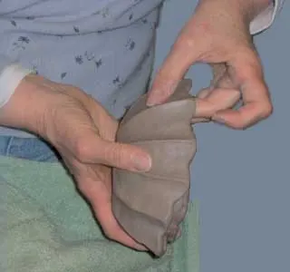
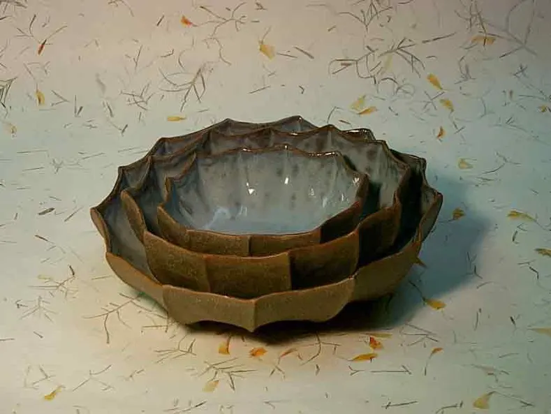
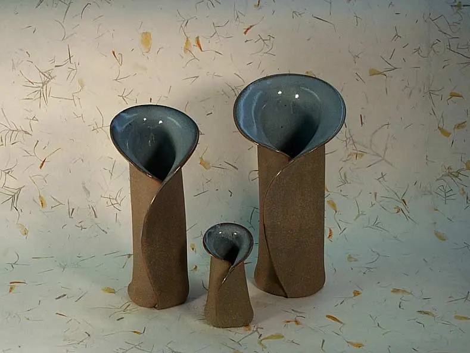
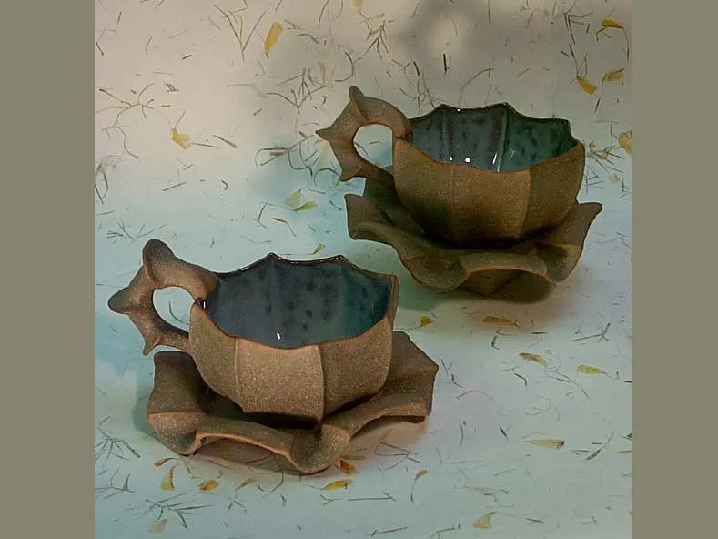
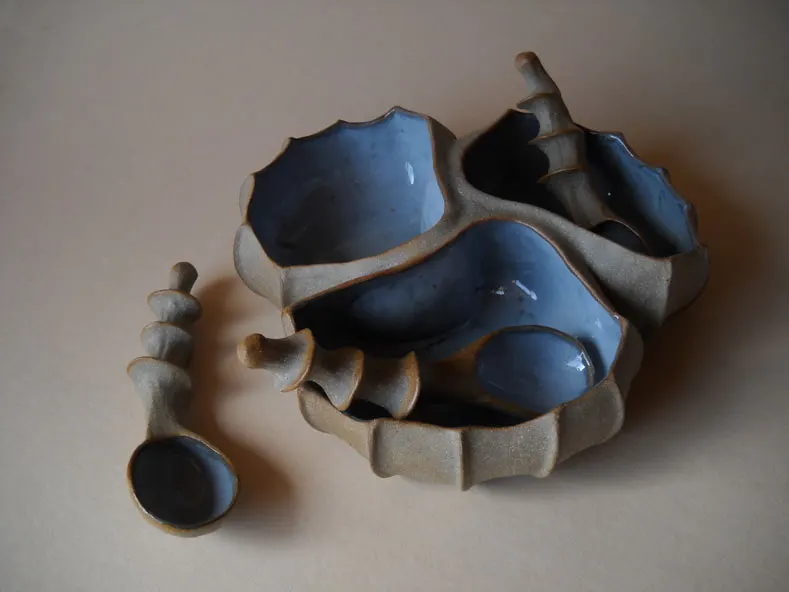
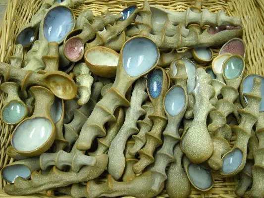
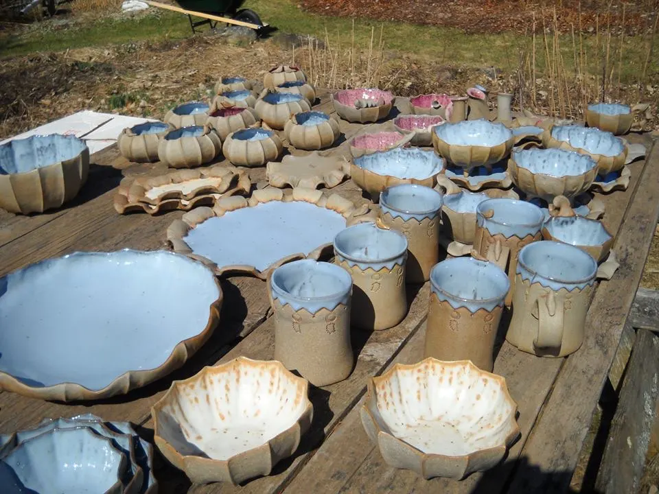
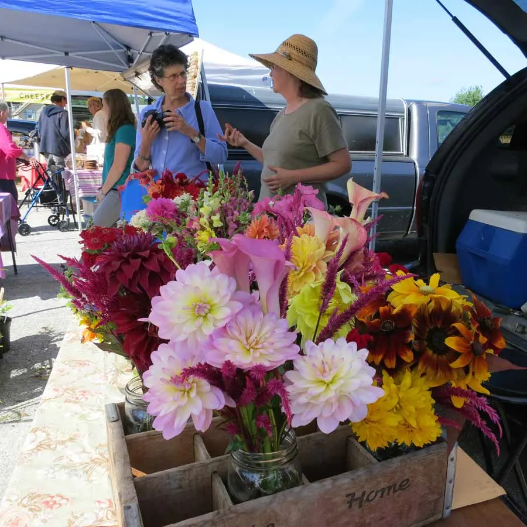
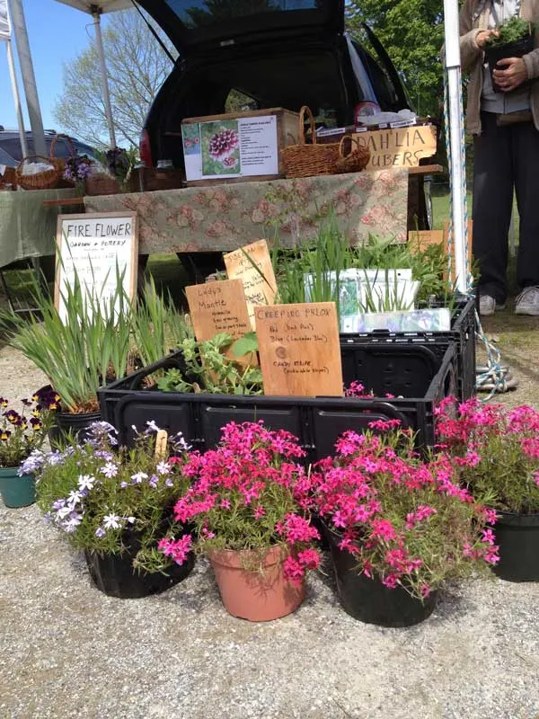

Handbuilt pottery, perennials and cut flowers in Thorndike, Maine
Barbara Walch has been making handbuilt pottery since 1973. She is one of only a few American potters who work primarily with the pinch technique.
Her stoneware dinnerware is distinctive and unusual, from vases to bowls to her signature teapots. Barbara and her husband, Charlie Krause, run Fire Flower Garden and Pottery at their home just outside the village of Thorndike, in central Maine, where her studio has been since 1989. Around the working studio are extensive cottage gardens, cutting beds and a roadside plant stand.

The pottery
Stoneware fired at 2300°F in a propane kiln I built myself. The outside is often left unglazed, so the texture of the fired clay defines the form. Inside, the glazes recall a clear morning sky, or a drift of snow slowly melting into a plowed furrow.





I work to renew a sense of connection to nature: the textures of sand and stone, the colors of earth and sky, the forms of leaves and gourds, shells and seed pods, driftwood and flowers.
How to buy pottery
The simplest way is to call or write to me.
9am to 7pm, Eastern time
I'm a one-person business and not always by the phone. If you get the answering machine, leave your name, number and a short message, and I'll call you back as soon as I can.
Call Barbara
By email
walchkrause@gmail.com. Tell me which piece caught your eye.
At the studio
Studio visits by appointment, year round. One-of-a-kind pieces are scattered through the gardens. 33 Knox Station Road, Thorndike.
At the Belfast Farmers' Market
Fridays from 9am to 1pm in season, with a small selection of vases and other pottery next to the flowers.
In shops
Maine Potters Market in Portland, open year round, and the Center for Maine Craft in West Gardiner.
Pottery can wait, thanks to plastic, whereas horticulture waits for no one.
Barbara, on dividing her days between the studio and the garden
Fire Flower Garden
A small farm and large garden that grew out of a love of flowers. Hardy perennials, bulbs and tubers suited to the often harsh mid-Maine climate, in USDA Zone 4. Fire Flower Garden is Certified Organic by MOFGA.


The plant stand
Perennials, cut flowers and herb plants, from May through mid-September. It works on the time-honored self-service system, unless we happen to be out in the garden when you arrive.
Cut flowers
Daffodils in spring, then everything from zinnias to calla lilies until frost. If you need to travel with your bouquet, ask for a mason jar with water to keep it happy on the ride.
Garden visits
By appointment. Cottage gardens surround the 1800s farmhouse and pottery, and Charlie's "Willow Room" changes every year. Call ahead if you want to talk gardening.
Come out to Thorndike
33 Knox Station Road
Thorndike, ME 04986
A quarter mile down Knox Station Road, off Route 139. Look for the red signs with white lettering.